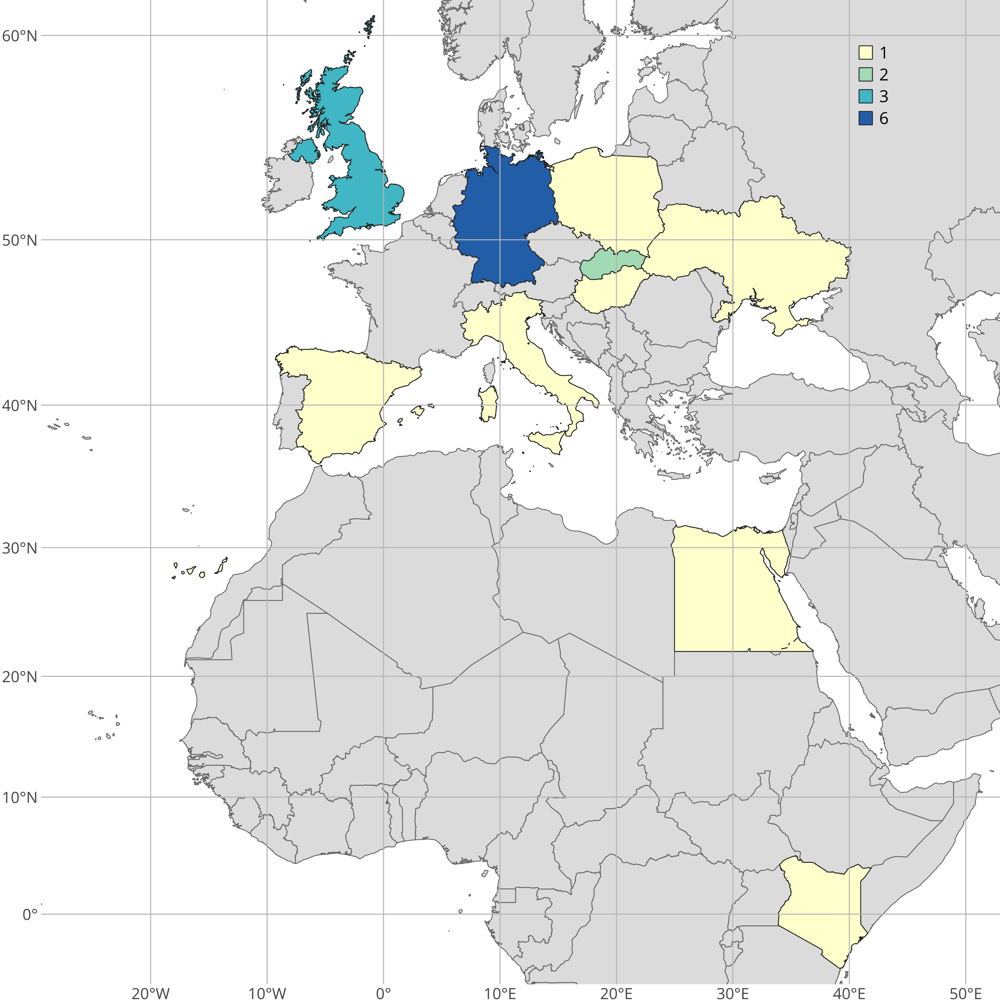
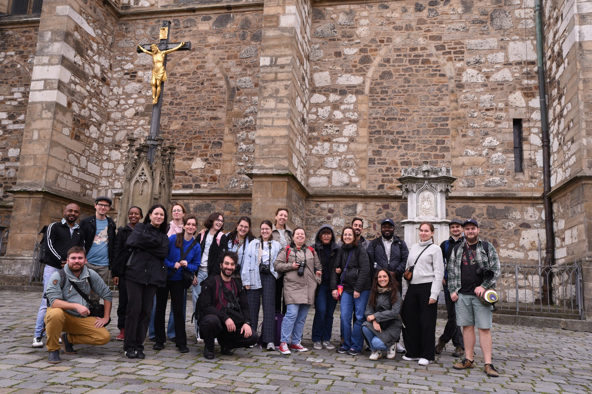

| Name | Country | Report |
|---|---|---|
| Akintayo, Akinbowale | United Kingdom | Report (PDF) |
| Brunello, Marco | United Kingdom | To be submitted. |
| Carrero-Pazos, Miguel | Spain | Report (PDF) |
| Carrillo, Valeria | United Kingdom | To be submitted. |
| Galazzo, Daniela | Egypt | To be submitted. |
| Garzón Rodríguez, Judit | Germany | Report (PDF) |
| Gavra, Paraskevi | Germany | To be submitted. |
| Gyurka, Orsolya | Hungary | To be submitted. |
| Hladíková, Katarína | Slovakia | To be submitted. |
| Hrytsiuta, Oksana | Ukraine | To be submitted. |
| Kanyingi, John | Kenya | To be submitted. |
| Michalopoulou, Areti | Germany | To be submitted. |
| Mosha, Martha | Germany | To be submitted. |
| Myat, Yin Min | Italy | Report (PDF) |
| Resuloglu, Emre | Germany | To be submitted. |
| Ritterová, Barbara | Slovakia | To be submitted. |
| Sotomayor Chicote, Maria | Germany | To be submitted. |
| Staszkiewicz, Paulina | Poland | Report (PDF) |
Insights and recap
We had 18 participants working and/or studying at universities, museums and other research institutions from near and far!

Photos

Showcase
by Paulina Staszkiewicz
by Marco Brunello, John Kanyingi and Martha Mosha